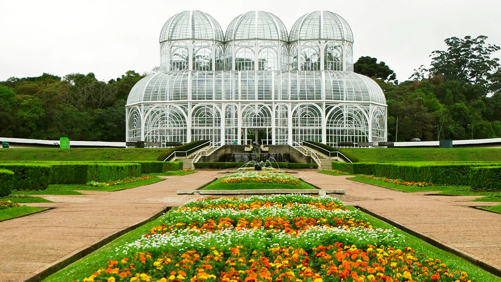

Florianópolis - Santa Catarina

Florianópolis, a capital do estado de Santa Catarina no sul do Brasil, é maioritariamente constituída pela Ilha de Santa Catarina, com 54 km de comprimento. É famosa pelas suas praias, incluindo estâncias turísticas populares como a Praia dos Ingleses na extremidade norte da ilha. A sua Lagoa da Conceição, uma lagoa de água salgada, é popular para a prática de windsurf e para excursões de barco. A Ponte Pedro Ivo Campos faz a ligação entre a ilha e a zona comercial continental. Conhecida como Ilha da Magia e carinhosamente chamada de Floripa, ela tem cerca de 500 mil habitantes e em torno de 54 km de Norte a Sul. Cada pedacinho de Florianópolis tem uma característica distinta, sendo sempre sua principal atração a Natureza, em suas mais diversas formas, especialmente através do mar e suas montanhas.
Florianópolis tem praias maravilhosas, muitas vezes com águas cristalinas, tem diversas trilhas, muitas delas terminando em praias desertas — quase um troféu dado a quem se encoraja a caminhar. Já ouviu falar da famosa Jurerê? Não é a principal praia em beleza, mas está entre as mais badaladas praias do Brasil, com festas que fervem no verão! E é do mar, cenário presente a todo momento, que sai também a mais popular produção do estado, a de ostras. Ostras, camarões, polvo e peixes, como a tainha, são a marca dos restaurantes locais, vários deles com uma vista lindíssima para o mar e comida fresquinha!
Leia mais
O que fazer em Florianópolis ?
Há bastante coisa para ver e fazer em Florianópolis. Na região central, uma boa pedida é fazer um passeio pela Beira-Mar Norte, onde se pode admirar um lindo fim de tarde e a Ponte Hercílio Luz, cartão-postal da capital. Também no centro, vale a pena conhecer o Mercado Público, com ótimos locais para beber entre amigos e petiscar. Curtir a praia Praia Mole, descer as dunas da Joaquina, fazer um passeio de barco pela Costa da Lagoa, passar um fim de tarde na Lagoa da Conceição, praticar esportes ao ar livre, visitar vilas açorianas — que têm uma cultura muito forte no Estado — estão entre as principais atrações de Florianópolis. Para quem curte ficar ao ar livre, a lista de atividades na cidade não tem fim! Ao sul da ilha, onde as águas são mais geladas, um dos grandes atrativos é a Ilha do Campeche. Digna de transparência caribenha, a pequena praia da ilha é de tirar o fôlego tamanha sua beleza!
Rio de Janeiro - Rio de Janeiro

O Rio de Janeiro é uma grande cidade brasileira à beira-mar, famosa pelas praias de Copacabana e Ipanema, pela estátua de 38 metros de altura do Cristo Redentor, no topo do Corcovado, e pelo Pão de Açúcar, um pico de granito com teleféricos até seu cume. A cidade também é conhecida pelas grandes favelas. O empolgante Carnaval, com carros alegóricos, fantasias extravagantes e sambistas, é considerado o maior do mundo. A cidade do Rio de Janeiro é cara do Brasil; concentra em si tudo que uma cidade do mais alto padrão pode oferecer: muitos restaurantes, peças teatrais, passeios culturais, boa vida noturna, compras, áreas arborizadas para caminhadas ao ar livre, é sede de grandes empresas, é a segunda maior metrópole do país e, claro, tem praias deslumbrantes. É a própria miscigenação da cultura do povo brasileiro.
O Rio de Janeiro, é a cidade brasileira mais conhecida no exterior tem a fama de possuir um povo alegre, ávido por sol, praia, futebol e samba. Mas o Rio vai muito além disso: tem história. Tornar-se sede da colônia, abrigo da corte portuguesa e depois capital do Brasil foi fundamental para que não apenas a própria cidade como o país todo se desenvolvesse em diversos aspectos.
Leia mais
O que fazer no Rio de Janeiro ?
A capital carioca tem atrações para todos os gostos e idades. O mais famoso ponto turístico do Rio, o Cristo Redentor, foi incluído como uma das novas sete maravilhas do mundo. E há muito mais para fazer, conhecer e revisitar caso esteja passando pela cidade em uma nova oportunidade. Admirar a vista do Pão de Açúcar, pedalar por Ipanema, relaxar no Jardim Botânico, tomar um café no Forte de Copacabana, curtir a noite na Lapa e passear no interativo Museu do Amanhã são algumas das dezenas de atrações que o Rio reserva aos seus visitantes que gostam de passeios mais tradicionais. Para quem quer algo diferente, que tal subir uma trilha no Morro da Urca, fazer um passeio de helicóptero ou curtir a Prainha, na zona oeste da cidade? Tudo isso sem falar nos grandes eventos que o Rio sedia, como o Carnaval das escolas de samba e dos blocos de rua, e do Réveillon, com uma queima de fogos que reúne milhões de pessoas! O admirável da cidade é sua capacidade de constantemente oferecer algo novo, uma paisagem vista por um novo ângulo, um novo point, um evento... Sempre combinando seu turismo urbano e paisagens naturais sensacionais lado a lado. Mesmo com a violência, que infelizmente faz parte da realidade, o Rio segue sendo a nossa cidade maravilhosa!
Fortaleza - Ceará
 |
Fortaleza é a capital do estado do Ceará, no Nordeste brasileiro. A cidade é conhecida por suas praias, com falésias vermelhas, palmeiras, dunas e lagoas. As tradições folclóricas da cidade podem ser vistas em apresentações de dança no Theatro José de Alencar, construção em estilo art nouveau inaugurada em 1910. Outro destaque arquitetônico é a Catedral Metropolitana, em estilo neogótico.
Fortaleza é um dos destinos turísticos mais cobiçados no Brasil e, depois de conhecer a variedade de atrativos que a cidade oferece, fica fácil entender o porquê desse sucesso. Com o poder de agradar pessoas de todas as idades, a capital cearense mistura muitas coisas de que o brasileiro gosta: belezas naturais, cultura, música, diversão e uma culinária de tirar o chapéu.
Fortaleza é a capital do Ceará e tem mais de 2,6 milhões de habitantes. A cidade é um dos principais destinos do Nordeste brasileiro e tem ótimas opções de passeios. O mar faz parte do contexto da capital, sempre presente nos cenários do dia-a-dia. Seja para pegar um sol durante a manhã ou para caminhar à noite, o litoral é um dos grandes destaques de Fortaleza. A orla urbana de Fortaleza — acompanhada por edifícios altos e um calçadão movimentado — reúne as praias de Iracema, Mucuripe e Meireles, onde fica a feirinha de Artesanato, que todas as noites fica cheia de turistas. A cerca de 10 km dessa região fica a Praia do Futuro, a melhor praia da cidade para curtir o mar, ideal para quem busca estrutura e um pouco de sossego.
O Beach Park é outro programa imperdível, que agrada a famílias com pessoas de todas as idades! Ele fica na Praia de Porto das Dunas e é um dos parques aquáticos mais conhecidos do Brasil, tem dezenas de atrações e potencial para satisfazer tanto aqueles que querem apenas curtir uma piscina com tranquilidade quanto a quem procura por toboáguas com fortes emoções!
Para quem gosta de atividades culturais, Fortaleza também tem várias opções. O Centro Dragão do Mar de Arte e Cultura, ou apenas Dragão, é uma das melhores opções para ver uma exposição, assistir a um filme e, de quebra, curtir um barzinho no fim do dia. Aliás, a vida noturna da capital é tão animada quanto à vida diurna. De segunda a segunda, Fortaleza tem atrativos para curtir a noite e, se você não perde a oportunidade de dar risadas, assistir a um show de humoristas cearenses será uma ótima escolha! Para quem gosta de dançar, o forró é o ritmo que move a região.
Curitiba - Paraná
|
 |
Curitiba é a capital do estado do Paraná, na região sul do Brasil. A Torre Panorâmica, que tem um observatório em sua parte superior, destaca-se na silhueta da cidade. Conhecida como centro cultural, Curitiba abriga vários espaços para apresentações, como a Ópera de Arame, uma estrutura de aço tubular com telhado transparente, e o enorme Centro Cultural Teatro Guaíra, que apresenta uma programação variada.
A cidade de Curitiba, capital do estado do Paraná, é conhecida pelo cuidado com o planejamento urbano, belas áreas verdes e um transporte público de qualidade. A fama não é para menos. Curitiba realmente oferece um excelente padrão de vida para os moradores. O fenômeno se reflete também no turismo e torna a cidade um dos destinos mais bem preparados do país para receber viajantes. Há muito o que fazer em Curitiba e a cidade é uma excelente pedida para viagens rápidas e de última hora.
Você precisará de pouco tempo para se adaptar ao forte sotaque curitibano e à maneira muito peculiar com que piás e gurias recebem os visitantes. Apesar das diferenças de vocabulário, curtir Curitiba será fácil! Difícil mesmo será entender o clima, que no mesmo dia consegue passar por todas as estações do ano. Depois de se adaptar ao tira e bota de casacos, você também se sentirá em casa. Vale até fazer amizade com as simpáticas capivaras que se tornaram símbolo de Curitiba e garotas-propaganda da hospitalidade local.
Principais pontos turísticosAo pensar em Curitiba, quase sempre lembramos da estufa de vidro do Jardim Botânico. E ela é realmente a grande estrela da cidade! À primeira vista, Curitiba parece não oferecer muitos outros pontos turísticos. Não se engane. A cidade é atenta ao turismo e desenvolveu ótimos roteiros para quem deseja se aventurar por alguns dias na terra dos pinhões. Se ficar na dúvida sobre o que fazer em Curitiba, comece pela Linha Turismo, especialmente dedicada aos viajantes. A rota é feita por um ônibus panorâmico de dois andares e leva a quase todos os pontos turísticos mais importantes da capital paranaense, entre eles o Parque Barigui e o Parque Tanguá, onde o pôr do sol é espetacular. Não só isso. Curitiba também é convidativa a ser explorada a pé, de bike ou mesmo no eficiente transporte público. Até o trânsito ajuda nessa hora, especialmente porque é difícil ver grandes engarrafamentos por lá.
Ouro Preto - Minas Gerais
Ouro Preto é uma cidade colonial na Serra do Espinhaço, na zona leste do Brasil. É conhecida pela arquitetura barroca, que inclui pontes, fontes e praças, e pelas ruas calcetadas íngremes e sinuosas. A Praça central de Tiradentes recebeu o nome do mártir da independência brasileira. Existem várias igrejas e capelas por toda a cidade, incluindo a Igreja de São Francisco de Assis, do século XVIII.
Enquanto o carro percorre a sinuosa estrada que leva até Ouro Preto, os olhos dos viajantes seguem atentos à incrível Serra do Espinhaço. O sobe e desce das montanhas anuncia o lindo e bucólico cenário que envolve a antiga cidade de Vila Rica. Entre as paisagens naturais do Pico do Itacolomi e as igrejas barrocas do século XVIII, a luz do sol encontra espaço e ilumina os casarões coloniais que tomam conta de ladeiras centenárias. Ouro Preto respira o período colonial brasileiro e andar por suas ruas de pedra nos leva direto ao século XVIII, quando a cidade se tornou uma das mais importantes do país.
Ouro Preto já foi palco da incessante corrida em busca de ouro e intenso trabalho de pessoas escravizadas. Hoje, a cidade resguarda parte importante da história do Brasil e recebe milhares de visitantes em busca de algumas das mais belas atrações turísticas de Minas Gerais. Aproveite os dias em Ouro Preto para se aprofundar na história, arte e culinária mineira. O pacote de maravilhas de Ouro Preto só é completo com tudo junto! Viajar para Ouro Preto é abrir os olhos para o Brasil. A cidade ensina a todo momento como foi construído o país e cada cantinho da encantadora cidade mineira é especial.